圧倒的洗浄力・汚れにとことん向き合っています
TAIYO Co., Ltd Cleaning Service
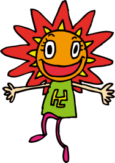
その全てのお悩み、
有限会社太陽が解決します！
弊社は大規模施設の布団を多数扱い、
手洗いと丁寧な検品による高品質な
クリーニングと温かい対応、
さらにピュアクリーニングバックアップにより
安心の品質をお届けします。
私たちの仕事は、クリーニングではありません。
布団や寝具をきれいにすることは、私たちにとって当たり前のことです。
私たちが本当に届けたいのは、その先にある安心して眠れること。気持ちよく一日を過ごせること。
人が健やかに暮らすために欠かせない「睡眠」を支え、その土台となる寝具を清潔に保つこと。
それは、人々の暮らしを支える大切な役割だと考えています。
だからこそ私たちは、一枚一枚に責任を持ち、品質に妥協せず、誠実な仕事を積み重ねます。
これからも、お客様に信頼されるパートナーとして、暮らしに欠かせないサービスを提供し続けてまいります。
有限会社 太陽 スタッフ一同の想い
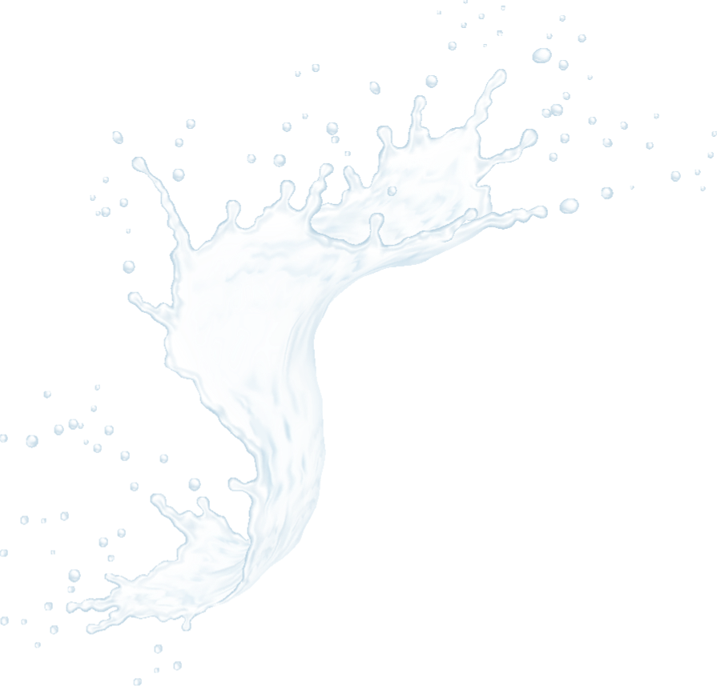
お客様ごとに専任の営業担当者を配置。ヒアリングから納品まで一貫してサポートし、顔の見える関係を構築します。
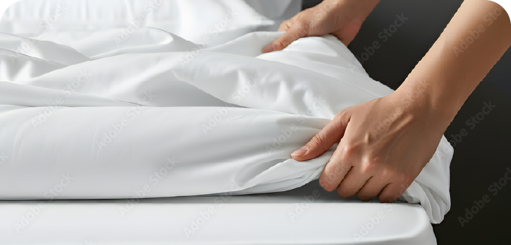
ピュアクリーニングの厳しい品質基準をクリアした業界最高水準の品質基準を実現します。
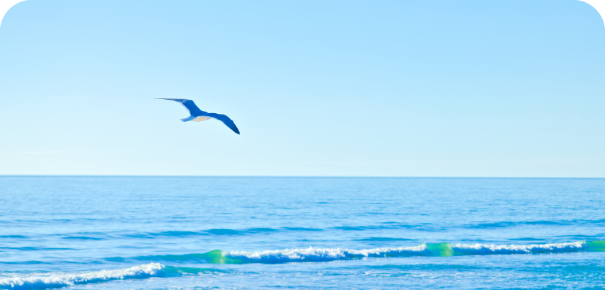
「海をまもる洗剤」の使用や水資源の効率的な利用により、サステナブルなクリーニングを実現しています。
有限会社太陽は
「環境を守ること」をミッションに、
地球に優しいクリーニングを
追求しています。
洗剤・設備・水資源の全てにおいて
「持続可能な未来」を見据えた
取り組みを行っています。
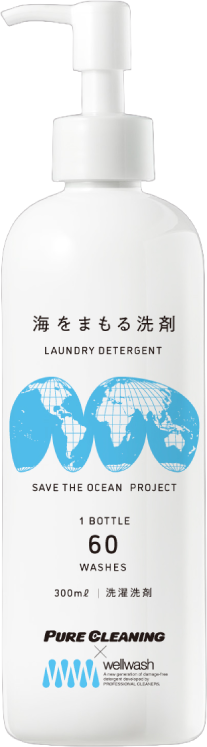
01
将来の環境のために、今の暮らしの楽しさを我慢する。
それでは長くつづけていくのは難しいと思うのです。
私たちが目指すのは「無理することなく楽しく暮らすことが、
気づいたら、豊かで健やかな環境につながっている」という世界観。
そのための地域社会と地球環境に関する取り組みの一環で
海をまもる洗剤を使用してます。
02
洗濯、クリーニングは衣類に付着した汚れをきれいに取り除くために洗剤を使用します。一般的には汚れが落ちやすいよう合成洗剤が多く用いられ、これらは石油系界面活性剤や合成香料、漂白剤、蛍光増白剤などが含まれており、それらは海洋汚染の一因となります。業務用洗剤は洗浄力・コストパフォーマンスは高いが、環境負荷が高い。それを解決するのが「海をまもる洗剤」です。
海をまもる洗剤は「ナノ粒子分散」という新しい発想により、洗浄力を維持しつつ、界面活性剤の量を最小限にし、洗剤残りによる黄ばみや臭いを根本から防ぎます。
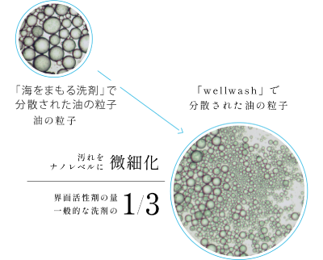
「海をまもる洗剤」は海洋汚染の要因となる自然に還らない化学物質は含まれていないうえ、今までの「油を油で浮かせて移動させる」洗剤でなく、「油を分解する」洗剤です。その環境性能は世界基準（OECD）で、約1か月で89.2%の生分解性が認められています。
「海をまもる洗剤」の洗浄成分は100％植物由来。洗浄力はもちろん、環境にもお肌にもやさしいものになり、医薬品や化粧品などで行う「24時間閉塞パッチテスト」「スティンギングテスト」の結果として、日本皮膚科学会認定専門医により証明されています。
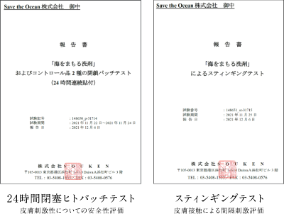
03
企業活動の中で行う洗う事は目の前のものをキレイにした反面、
汚れを見えないところに移動し、大きな環境負荷を引き起こしているのが現実です。
事業ゴミやCO2については意識が高まりつつあるなか、
排水に対しての意識が行き届いていません。
有限会社太陽では汚れを落とす洗剤を
「環境と洗浄力の、どちらもあきらめないエシカル洗剤」に変えています。
皆様の企業活動の中で当社をご利用いただくことで
「洗濯で海を汚す時代を終わらせる」という取り組みを一緒に行い、
企業のSDGs活動の一貫として社外へのPRにもご利用いただくことができます。
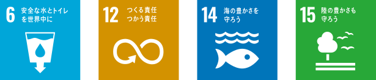
太陽のクリーニングサービスを
ご利用いただいているお客様から、
嬉しいお声をいただいています。
病院
介護施設
ホテル・旅館
カーディーラー
飲食店
スポーツチーム
クリーニング会社
有限会社太陽では、専任の営業担当者を
各お客様の担当として配置しています。
顔の見える関係を大切に、安心して
お任せいただけるサービスをお届けします。
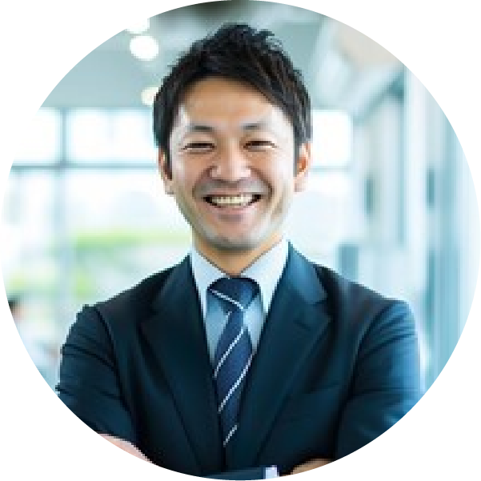
営業部門を統括し、お客様との信頼関係を第一に考えています。丁寧なヒアリングで最適なプランをご提案します。
「プロフェッショナルな対応」をモットーに、お客様のご要望に迅速にお応えします。
品質管理の専門家として、一枚一枚丁寧な仕上がりをお約束します。
お問い合わせからサービス開始まで、
シンプルな4ステップでご利用いただけます。
WEBフォームまたはお電話にて
お気軽にご連絡ください。
専任担当者がご要望を伺い、
最適なプランをご提案します。
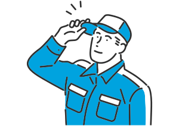
品物に合わせた最適な洗浄方法で、
一点一点丁寧にクリーニング・仕上げを行います。
ふっくら仕上がった寝具を
お届けします。
お客様からよくいただくご質問をまとめました。
その他のご不明点はお気軽にお問い合わせください。
どのような寝具をクリーニングできますか?
布団・毛布・シーツ・枕・テーブルクロスなど、基本的になんでも洗えます。他社で断られた寝具も、素材や状態を確認の上、最適なクリーニング方法をご提案いたします。まずはお気軽にご相談ください。
対応エリアはどこまでですか?
布団・毛布・シーツ・枕・テーブルクロスなど、基本的になんでも洗えます。他社で断られた寝具も、素材や状態を確認の上、最適なクリーニング方法をご提案いたします。まずはお気軽にご相談ください。
少量からでも依頼できますか?
布団・毛布・シーツ・枕・テーブルクロスなど、基本的になんでも洗えます。他社で断られた寝具も、素材や状態を確認の上、最適なクリーニング方法をご提案いたします。まずはお気軽にご相談ください。
クリーニングの品質管理はどのように行っていますか?
布団・毛布・シーツ・枕・テーブルクロスなど、基本的になんでも洗えます。他社で断られた寝具も、素材や状態を確認の上、最適なクリーニング方法をご提案いたします。まずはお気軽にご相談ください。
ダニ・抗菌などのオプション加工はありますか?
布団・毛布・シーツ・枕・テーブルクロスなど、基本的になんでも洗えます。他社で断られた寝具も、素材や状態を確認の上、最適なクリーニング方法をご提案いたします。まずはお気軽にご相談ください。
見積もりは無料ですか? 納期はどのくらいですか?
布団・毛布・シーツ・枕・テーブルクロスなど、基本的になんでも洗えます。他社で断られた寝具も、素材や状態を確認の上、最適なクリーニング方法をご提案いたします。まずはお気軽にご相談ください。
布団・毛布・設備備品など、
各種クリーニングに対応しております。
まずはお気軽にご相談・お問い合わせください。
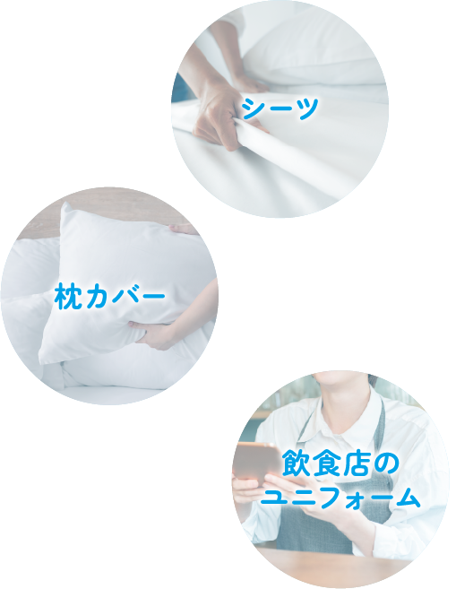
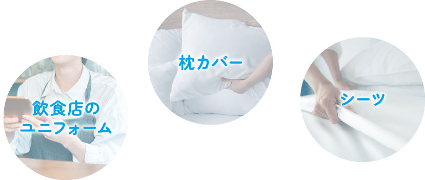
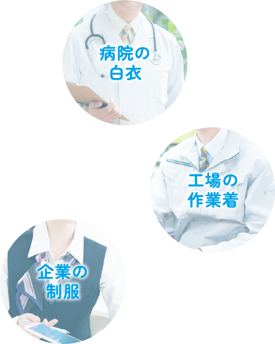
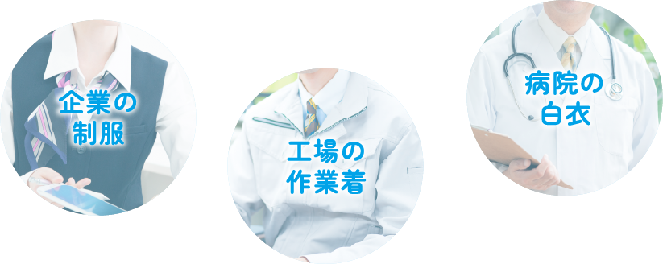
フォームにご希望の内容と必要事項を
ご記入ください。
通常3営業日以内に、弊社の営業担当より
ご連絡いたします。